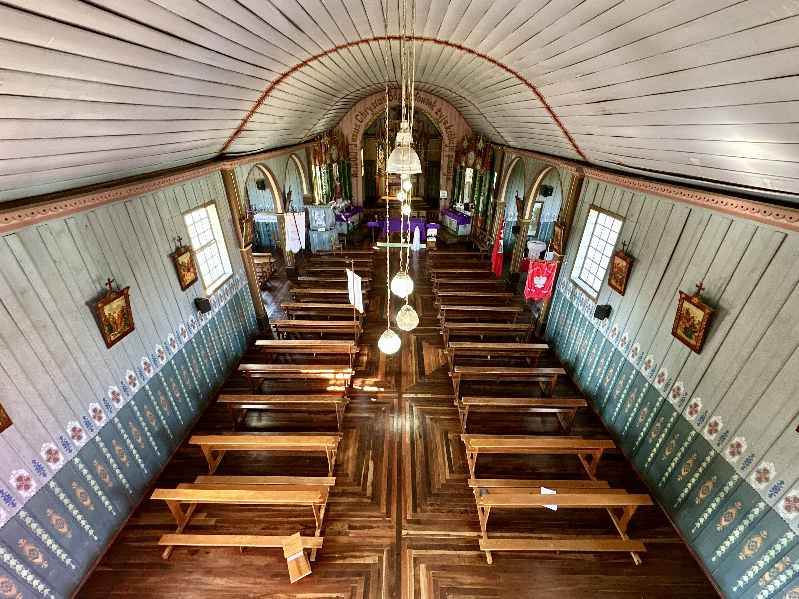
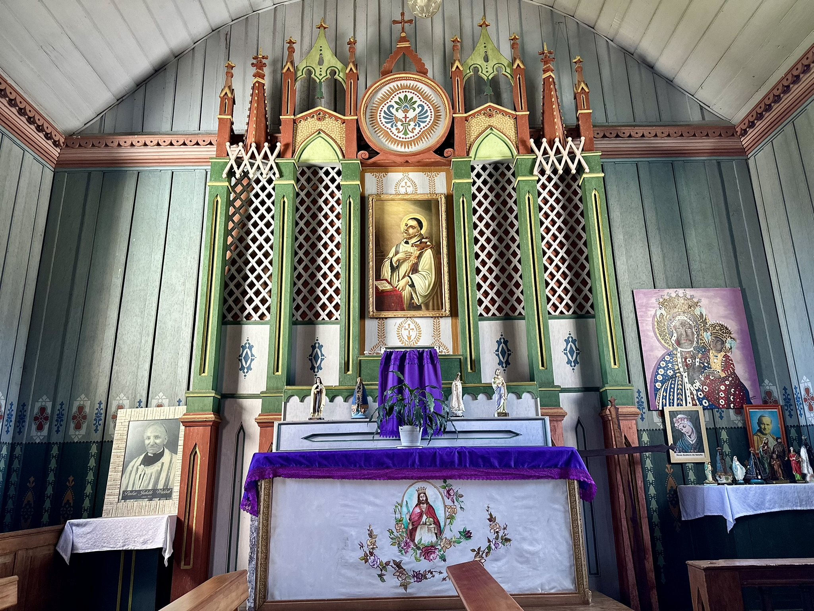
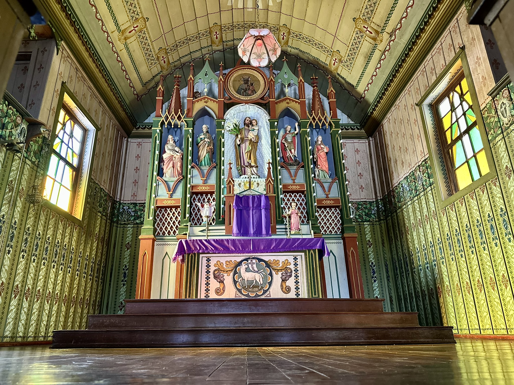
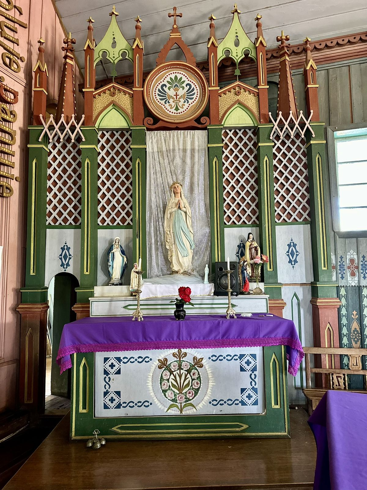
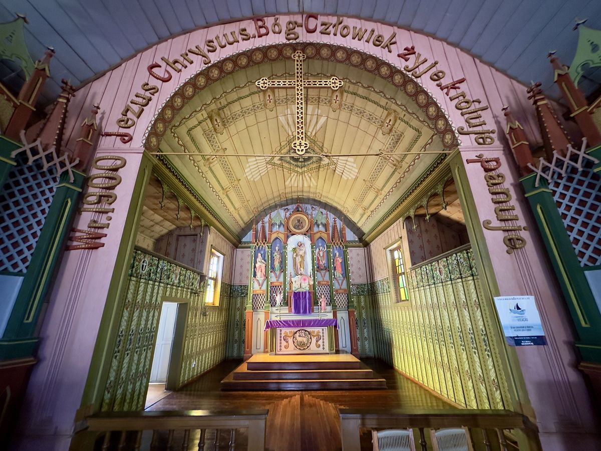
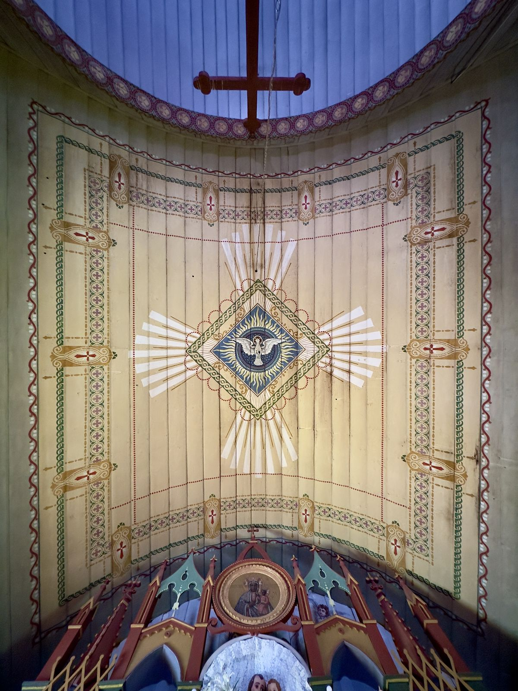
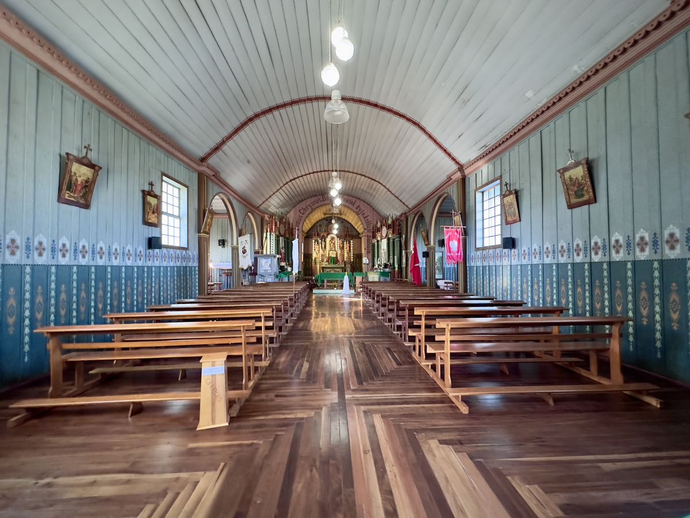
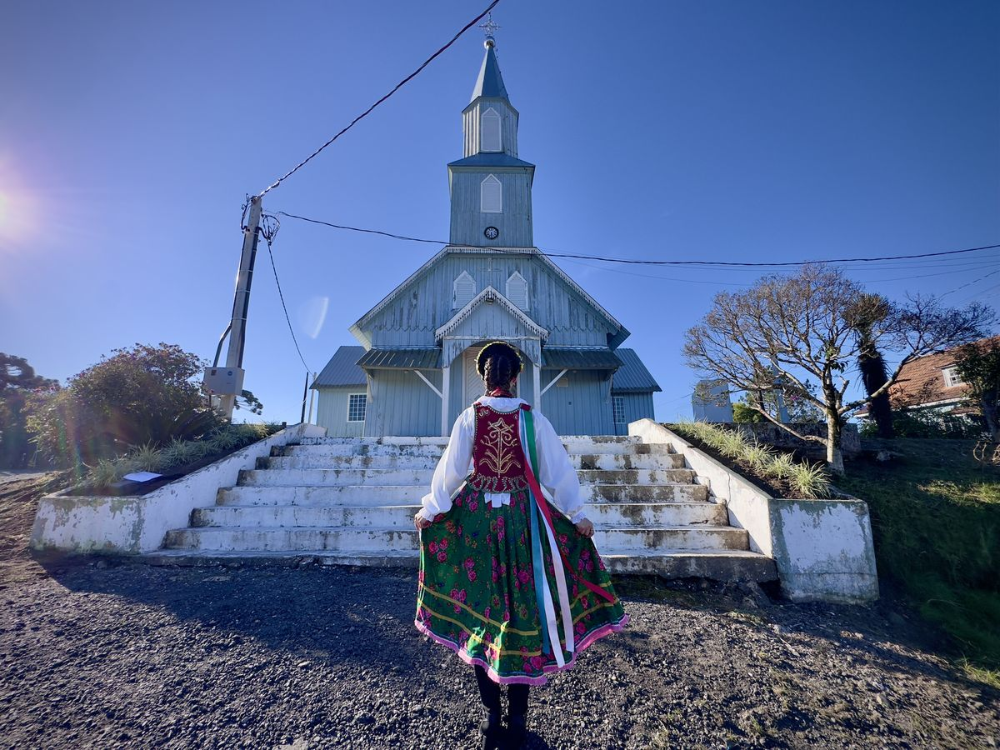

🏛️ Patrimônio Histórico
.png)
Igreja Matriz
Majestosa arquitetura neogótica que marca o centro da cidade há mais de um século, vista do portal de entrada da cidade.

Prefeitura Municipal
Elegante arquitetura que representa a administração e a história da cidade.

Igreja Água Branca
Joia da arquitetura polonesa rural, preservando tradições centenárias dos imigrantes.

Igreja Água Branca — Vista
Vista geral da Igreja da Comunidade Água Branca em seu entorno rural.

Igreja Água Branca — Interior
Interior com rica decoração de herança polonesa preservada pelos descendentes.

Igreja Água Branca — Altar
Altar central com detalhes artísticos que revelam a devoção dos colonos poloneses.

Igreja Água Branca — Nave
Nave com bancos e vitrais que contam a história dos imigrantes poloneses.

Igreja Água Branca — Detalhe
Detalhes arquitetônicos que revelam o esmero dos construtores poloneses do séc. XIX.

Igreja Água Branca — Entorno
Vista do entorno da Igreja integrada à paisagem rural de herança polonesa.

Igreja Água Branca — Painel
Painel artístico decorativo preservado pelos descendentes poloneses.

Igreja Água Branca — Façada
Façada principal, símbolo da fé e da tradição polonesa em São Mateus do Sul.

Igreja Água Branca — Celebração
Momento de celebração religiosa que une gerações da comunidade polonesa.
.JPG)


.jpg)
.JPG)